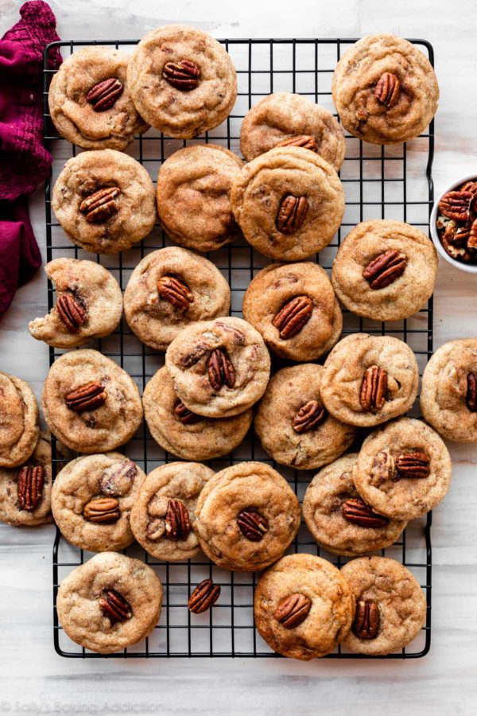

Maple Pecan Snickerdoodles

Description
These maple pecan snickerdoodles are soft and chewy with irresistible maple and cinnamon flavors. Set aside at least 2 hours to chill the cookie dough before rolling and baking. See recipe notes for additional information about some key ingredients.
Ingredients
- 2 and 1/2 cups (313g) all-purpose flour (spoon & leveled)
- 1 teaspoon cream of tartar
- 1 teaspoon ground cinnamon
- 1 teaspoon baking soda
- 1/2 teaspoon salt
- 3/4 cup (1.5 sticks; 170g) unsalted butter, softened to room temperature
- 1/2 cup (100g) packed light or dark brown sugar
- 1/2 cup (100g) granulated sugar
- 1 large egg, at room temperature
- 1/4 cup (60ml) maple syrup
- 1 teaspoon pure vanilla extract
- 1 and 1/2 teaspoons maple extract*
- 1 cup (130g) chopped pecans (plus pecan halves for topping)
Steps
- Cookies: Whisk the flour, cream of tartar, cinnamon, baking soda, and salt together in a medium bowl. Set aside.
- Using a hand mixer or a stand mixer fitted with a paddle attachment, beat the butter, brown sugar, and granulated sugar together on medium speed until smooth, about 2 minutes. Add the egg and beat on high until combined, about 30 seconds. Scrape down the sides and bottom of the bowl as needed. Beat in the maple syrup, vanilla extract, and maple extract until combined.
- Pour the dry ingredients to the wet ingredients, and then beat on low until combined. Beat in the chopped pecans. Dough will be thick and soft.
- Cover and chill the dough for 2 hours in the refrigerator (and up to 3-4 days). If chilling for longer than a few hours, allow to sit at room temperature for at least 30 minutes before rolling and baking because the dough will be quite hard.
- Topping: Mix the granulated sugar and cinnamon together. Set aside.
- Preheat oven to 350°F (177°C). Line large baking sheets with parchment paper or silicone baking mats. Set aside.
- Roll cookie dough into balls, about 1.5 Tablespoons of dough per cookie. Roll each ball generously into cinnamon sugar topping and place 2-3 inches apart on prepared baking sheets. Gently press a pecan half into the tops of each dough ball. (Not too hard or the pecan may break.)
- Bake for 13-14 minutes or until lightly browned around the edges. The centers will look very soft.
- Remove from the oven. If your warm cookies look puffy, lightly bang the pan on the counter when you remove it from the oven. That will help slightly deflate the cookies. Cool cookies on the baking sheets for 5 minutes before transferring to a wire rack to cool completely.
- Cover and store leftover cookies at room temperature for up to 1 week.
Back to Home